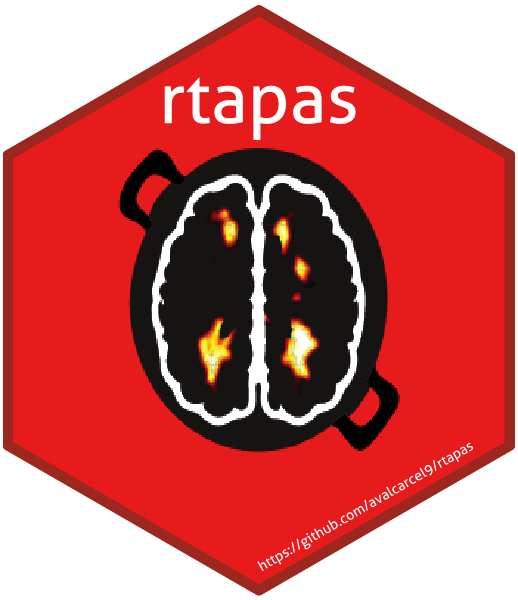

rtapas 
The goal of rtapas is to determine a subject-specific threshold to apply to multiple sclerosis lesion probability maps for automatic segmentation. This R package is based on the Thresholding Approach for Probability Map Automatic Segmentation (TAPAS) method. The methods are in progress for publication. This package creates data structures necessary for training the TAPAS model. After training, the model can be used to predict subject-specific thresholds to use on probability maps for automatic lesion segmentation. Methods can be extended outside of multiple sclerosis lesion segmentation but have not been validated.
Installation
To install the package from Neuroconductor, type:
source("https://neuroconductor.org/neurocLite.R")
neuro_install("rtapas")To get the latest development version from GitHub:
# install.packages('remotes')
library(remotes)
remotes::install_github('avalcarcel9/rtapas')